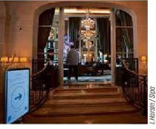
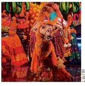

La cheffe végane
étoilée veut « imaginer
ce que sera la cuisine
de l'avenir ».P.6
Vendredi 14 avril 202320minute.frN°3832

Paris 18°
Des jeunes inscrits
à Pôle emploie poussent
les portes du Crillon P.3Réforme des Retraite
La mobilisation
à la française, un art
qui séduit nos voisins P.8

TÉLÉVISION
Bas les masques
sur les costumes
de « Mask Singer »
P.10